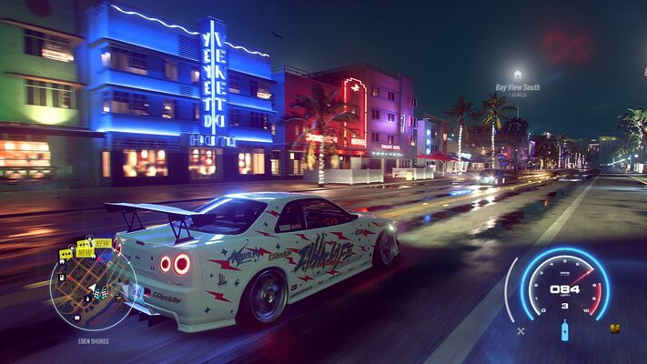
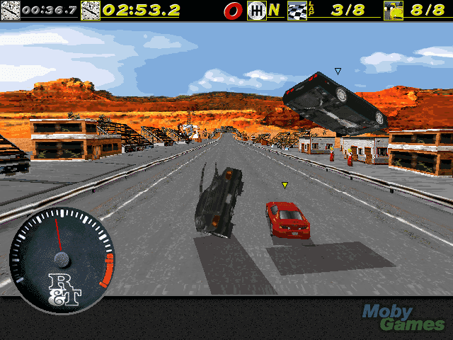
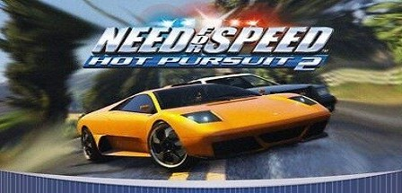

|  | Need for Speed е поредица видеоигри за автомобилни състезания на „Electronic Arts“. Това е една от най-популярните състезателни игри на пазара. Първата версия на играта се появява през 1994, а от 2002 г. всяка година излиза поне по една нова, с изключение на 2014 и 2018 година. |
| The Need for Speed (1994) | |
|  | The Need for Speed е първата игра от поредицата Need for Speed. Тя е разработена от EA Canada и издадена от Electronic Arts. Излиза на 31 август 1994 г. за конзолата 3DO, а през 1995 и 1996 г. излизат и версиите за персонален компютър, работеща под DOS, Плейстейшън и Sega Saturn. В нея играчът се състезава с екзотични и японски автомобили срещу компютърен опонент или друг играч. Цялото заглавие на играта е Road & Track Presents: The Need for Speed, защото партньор в разработването е списание Road & Track, което допринася за точното наподобяване на поведението на автомобилите, издаваните от тях звуци и др. В играта има и меню с данните за автомобилите и коментар, техни снимки и кратки видеа. |
| Need for Speed: Hot Pursuit 2 (2002) | |
|  | Need for Speed: Hot Pursuit 2 е състезателна видео игра от 2002 г., шестата част от серията Need for Speed и продължение на 1998 г. Need for Speed III: Hot Pursuit . Той е разработен от EA Black Box за PlayStation 2 и от EA Seattle за GameCube, Xbox и Windows. В него участват автомобили от различни производители и екзотични автомобили. Играчите могат да се състезават в състезания, използвайки тези автомобили, или да изберат да играят като полицейски служител и да преследват скорост. |